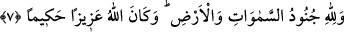

gadablanan kişinin halinde bir değişmedir ki, gadablanan kişi eziyet ve acı hisseder.
Neticesine gelince, kendisine kızılan kişiye acı çektirmek ve helâk etmektir. Gadabın
neticesinin gadab kelimesi ile ifâde edilmesi, sebebi zikredip müsebbebi kasdetme
şeklinde bir kinayedir.
“Allah onlara gadap etmiş, lânetlemiş”, onları rahmetinden uzaklaştırmıştır. “Ve
cehennemi kendilerine hazırlamıştır.” “Onlar için cehennemi hazırladım” buyurmuştur.
“Orası ne kötü bir yerdir!” Yâni, cehennem son durak ve son merci olarak ne kötü bir
yerdir. Cehennem dönülecek kötü bir yerdir.
7. Göklerin ve yerin orduları Allah’ındır. Allah azîzdir, hakîmdir.
“Göklerin ve yerin orduları Allah’ındır.” Göklerin ve yerin orduları Allah’ındır.
O’nun, her şeye karşı kudreti ve gücü yerli yerincedir. “Allah azîzdir, hakîmdir.”
İşlerinde hikmet sahibidir. Yaptığı şeylerin hepsini bir hikmete ve bir maslahata ma’tuf
yapar.
Bu âyet-i kerîme yukarıdaki âyetin tekrarıdır. Bu âyetin burada tekrarlanması şu
hususu tenbih etmek içindir: “Allah’ın rahmet melekleri vardır. O melekleri, mü’minleri
ta’zim ve ikram edilerek cennete girmeleri için indirir. Aynı şekilde Allah’ın azab
melekleri vardır. O melekleri de kâfirlere azâb eder. Burada bu âyetin
tekrarlanmasından maksad azab meleklerine işâret etmek içindir. Zaten alîm sıfatından
azîz sıfatına geçiş de bunu bildirmektedir. Çünkü Allah Teâlâ genellikle azab ve
intikamdan söz ederken kendisini azîz olarak vasıflandırır.
Bürhânü’l-Kur’ân adlı eserde denir ki: Göklerin ve yerin ordularının Allah’ın
olduğunu bildiren ilk âyet, mü’minlerin îmânlarının artırılması ve sekînet indirilmesi
konusunun hemen ardından gelmektedir. Dolayısıyla burada ilimden ve hikmetten söz
edilmelidir. Nitekim daha önce de, fethin gerekli kıldığı hususlar “Allah sana kahredici
bir zafer bahşetsin” ifâdesinde geçmişti.
Bu birinci âyetten sonra gelen ikinci ve üçüncü âyetler ise azabdan, gadabdan,
malların ve ganimetlerin elden gitmesinden bahsetmektedir. Dolayısıyla burada da,
izzetten, galebeden ve hikmetten söz etmek gerekir.
Keşfü’l-Esrar’da şöyle denir: Allah Teâlâ nebîsi ve mü’minler için, düşman olanların
tuzaklarını, ordularından dilediğiyle yok eder. Nitekim sivrisinekler ordusunu
Nemrud’un üzerine, Hûdhûd kuşunu da Belkıs üzerine salmıştır.
Rivâyet edildiğine göre münâfıkların reisi olan Abdullah bin Übey ibni Selûl dedi ki:
Kabul et ki Muhammed yahûdîleri hezimete uğratıp onları yendi. İranlılara ve Rumlara
nasıl gücü yetecek. Bunun üzerine Allah Teâlâ: “Göklerin ve yerin orduları tamamıyle
Allah’ındır” âyetiyle bu orduların İranlılardan da, Rumlardan da kat be kat daha fazla